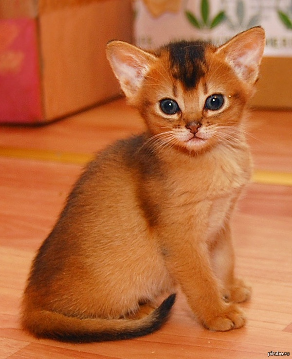

котята
британец
котёнок бесплатно (1-4 мес)

Саванна
Саванна-это дочь сервала, сохранившая в своей крови стать и повадки африканской кошки. котятам 4 месяца

Котенок по имени Гав
Порода называется - сомалийская
